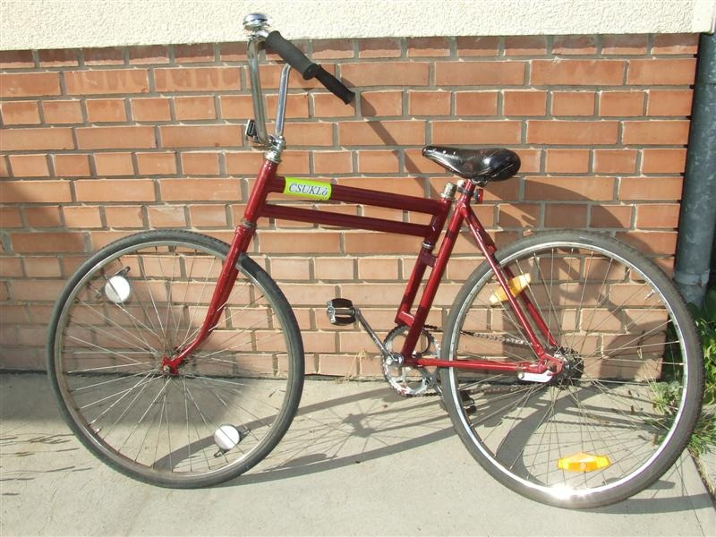
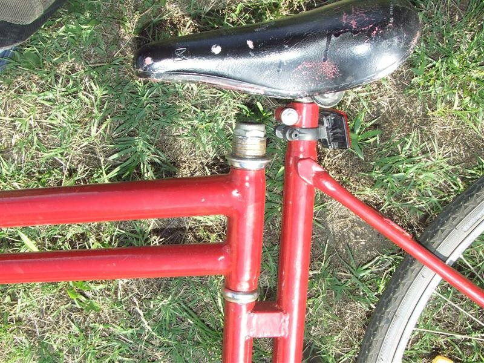
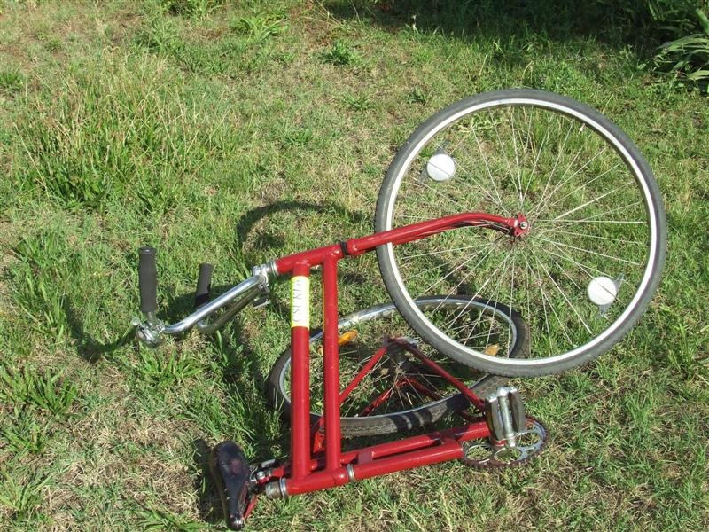

A Csukló bringa elsõ tekintetre közönséges biciklinek tûnik, de ha fel akarunk rá ülni, ijesztõen instabilnak találjuk.
Ez azért van, mert a váz középen összehajtható a beépített csukló miatt.
Ez a csukló egy kormányszerkezet alkotó elemeibõl lett kialakítva, de nagyon komoly erõsítést kapott, mert itt sokkal nagyobb terhelésnek van kitéve,
mint eredeti funkciójában, amikor az elsõ villát és a kereket kell tartania.

Kis gyakorlással a bicikli könnyûszerrel uralható, és két nyomon haladva is vezethetõ.
A kormánymû kialakításának köszönhetõen az egyenes haladási irányból kitérítve igyekszik visszatérni eredeti stabil egyensúlyi helyzetébe.
Használaton kívül a Csukló bringa harmonikaszerûen összehajtogatható.
